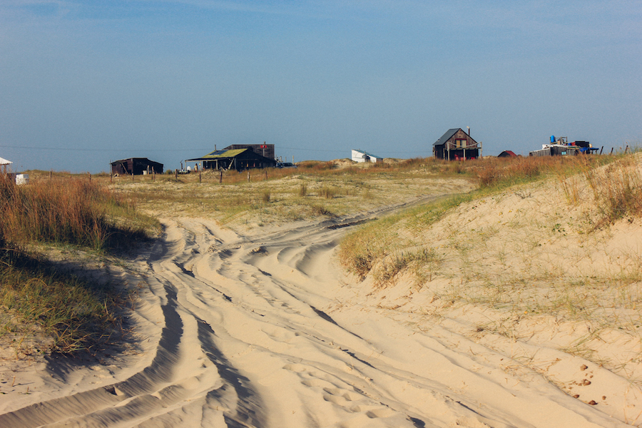

Cabo Polonio está situada no litoral sul do Uruguai no Departamento de Rocha, vizinha de três praias bem conhecidas por lá: La Paloma, La Pedrera e Punta del Diablo.
Cabo Polonio é um povoado uruguaio localizado no Departamento de Rocha. Próximo da sua costa, localizam-se três pequenas ilhas que servem de morada para lobos-marinhos: La Rosa, La Encantada e el Islote. O nome da cidade vem de um galeão espanhol que naufragou na região em 1735. O povoado é cercado de dunas de areia, e há décadas tem sido um destino popular entre jovens argentinos e uruguaios. Cabo Polonio possui uma paisagem singular, com enormes dunas ao redor da cidade. O balneário dista cerca de 7 km da estrada mais próxima, sendo seu acesso realizado por cavalos ou por carros 4x4. A população fixa é pequena, formada principalmente por pescadores, artesãos e funcionários do farol. Em Cabo Polonio não há rede elétrica. Porém, muitos estabelecimentos possuem gerador próprio. Isso não impede que durante a noite seja quase impossível localizar-se. Durante a alta temporada, Cabo Polonio conta com vários restaurantes, pousadas e casas para alugar, devido ao considerável número de aventureiros que acampam no povoado. A maioria possui origem argentina, embora o turismo interno e de outros países também seja significativo.
Quando ir, o que levar e mais dicas de viagem para para Cabo Polonio Mercado em Cabo Polonio Quando viajar a Cabo Polonio: se faz questão de entrar no mar, melhor viajar no verão, entre dezembro e março. É alta temporada, então melhor reservar sua hospedagem com antecedência. Já os meses mais frios do ano são maio, junho, julho, agosto e setembro. Sua mãe tem razão: é melhor levar um casaquinho! Em Cabo Polonio venta MUITO, e à noite faz bastante frio. Mesmo no verão, quando a temperatura mínima fica por volta de 17 ºC, a sensação térmica é inferior a isso. A vila tem recursos limitados, então não é fácil encontrar comida/bebida à venda. Os preços também são um pouco salgados. É melhor levar por garantia. Leve dinheiro! Poucos lugares na vila aceitam cartão, e não há como sacar dinheiro por lá. Então, no caminho, aproveite para fazer câmbio ou sacar nos caixas eletrônico de Punta del Este, por exemplo.
